UCSD History Department
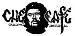 Che Cafe
Food Recovery Network
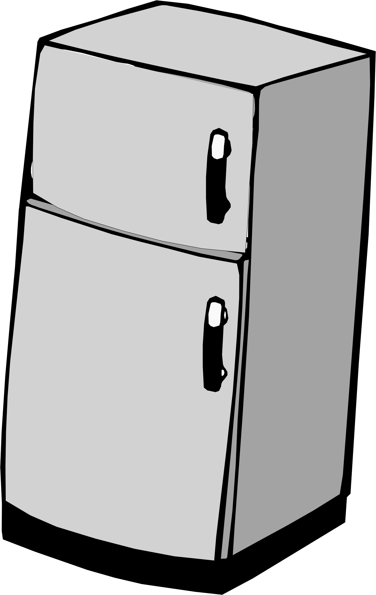 Che Community Fridge
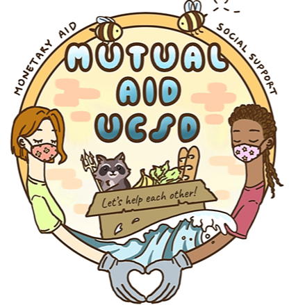 UCSD Mutual Aid Collective
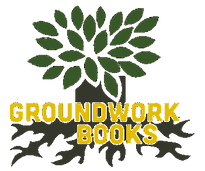 Groundwork Books
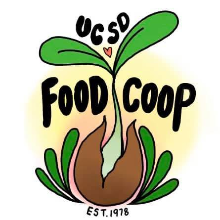 UCSD Food Co-Op
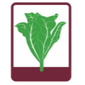 Roger's Community Garden
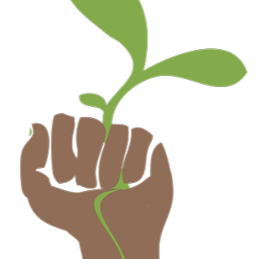 UCSD Student Sustainability Collective
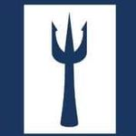 Triton Food Pantry
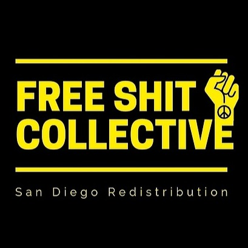 Free Shit Collective
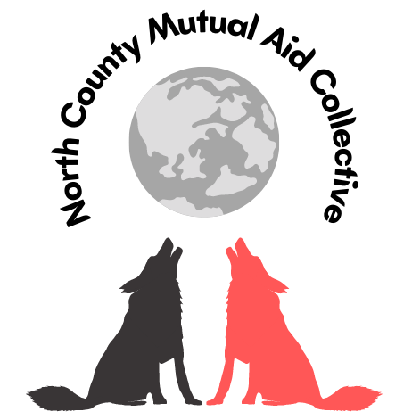 North County Mutual Aid Collective
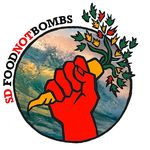 San Diego Food Not Bombs
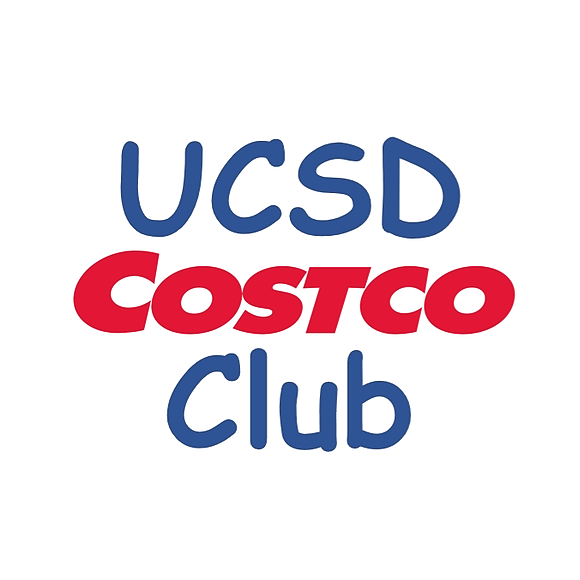 UCSD Costco Club
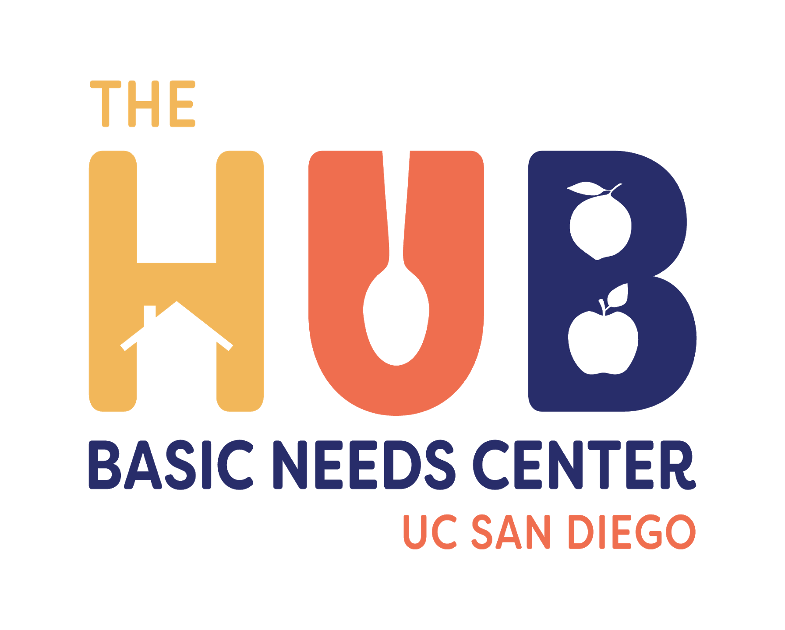 UCSD Basic Needs Hub
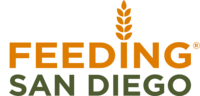 Feeding San Diego